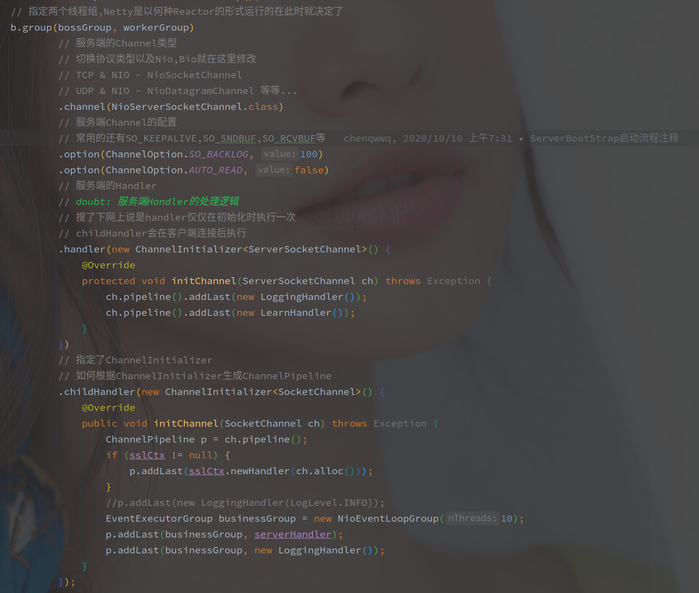
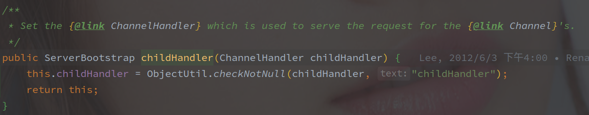
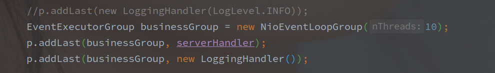

ChannelPipeline 构造过程
[TOC]
概述
ChannelPipeline 就是 Netty 中任何 IO 事件的处理链（责任链模式。
每一个 Channel 都会持有一个 ChannelPipeline 的实例对象，（也就是说 Channel 之间的 ChannelPipeline 之间都是相互独立的，并不会互相影响。
不论是服务端还是客户端的 Channel 都会有自己的 ChannelPipeline，在 ServerBootstrap 声明的时候分别是 handler() 和 childHandler() 方法。
ChannelHandler
以下是 ServerBootstrap 在绑定端口前的配置代码：

在配置 ServerBootstrap 的时候并没有初始化 ChannelPipeline，可以看到此时指定的是 ChannelInitializer 类。

内部配置的时候也是直接替换的，所以在初始化 Bootstrap 的时候无法直接指定多个 ChannelHandler，只能通过 ChannelInitializer 间接指定。
创建 ChannelPipeline
ChannelPipeline 的创建在 AbstractChannel 的构造函数中，在服务端 Channel （NioServerSocketChannel）的创建流程中会调用到该方法：

newChannelPipeline 是直接通过构造方法创建的，以当前 Channel 为参数。

Netty 中的 ChannelPipeline 默认使用的是 DefaultChannelPipeline。
接下来就是 DefaultChannelPipeline 的构造方法：

构造方法中首先指定了所属的 Channel，这里指定的 Channel，可以直接通过 DefaultChannelPipeline.channel() 方法获取。
之后就是调用链的初步构造，每一个 ChannelPipeline 在创建的时候都会填充 HeadContext 和 TailContext 两个节点。
这个非常关键，ChannelPipeline 的构造函数中就包含了 Head 和 Tail 两个节点的初始化，这是每个 ChannelPipeline 都有的基本节点。
并且 Head 和 Tail 使用的都是不同的实例对象。
相当于初始的 Pipeline 就是下面的样子：

经过初始化，也就是构造函数的调用之后，就得到了默认的 DefaultChannelPipeline 对象，现在的管道中除了对应 Channel，也已经有了 HeadConetxt 和TailContext 这两个头尾节点。
另外也可以看到的是ChannelPipeline中的节点并不是ChannelHandler类实例，而是AbstractChannelHandlerContext类，这是经过了又一层的包装。
ChannelHandler 负责的是业务的处理，而 AbstractChannelHandlerContext 负责是组链。
ChannelPipeline 的创键：
在 Channel 创建的时候 ChannelPipeline 就会跟着创建，但是并未初始化，整个链里面只有 Head，Tail。
添加自定义 ChannelHandler
通过 Channel 的创建，ChannelPipeline 的基本结构已经创建了，就差添加自定义的 ChannelHandler 了。
以下是 addLast 的最终实现，在 ServerBootstrap 配置的时候调用的 addLast 会最终调用到该方法：

以上的源码包含了添加到 ChannelPipeline 的基本逻辑（和 addFirst/addBefore 等逻辑基本一致。
1. 检查重复添加
首先会先进行检查，是否被多次添加，以下是检查的源码:

就很简单的检查 ChannelHandler 是否可以共享，isSharble 会使用反射检查该 ChannelHandler 是否有 @Sharable 注解。
ChannelHandler.added 属性就是是否已经添加的标志，添加过的 ChannelHandler 该属性会被置为 true。
这一步主要还是注意 @Sharable 的作用。
简单来说，只有 @Sharable 标记的 ChannelHandler 可以被多个 ChannelPipeline 使用。
默认情况下，单个 ChannelHandler 和 ChannelPipeline 绑定，可以保证线程安全。
2. 包装成 ChannelHandlerContext
这一步是将 ChannelHandler 进一步包装变成 ChannelHandlerContext。
由单一性原则来讲，ChannelHandler 只负责业务逻辑的实现，在业务链中传递事件的机制主要还是由 ChannelHandlerContext 实现的。
以下是具体实现的源码:

参数中的 group 就是在 addLast 的时候传入的线程池参数：

这是在 Accepter 和 IO 线程组之外的另一种线程角色，负责处理 ChannelHandler 中的业务流程。
childExecutor 方法就是从 group 中获取一个 EventExecutor，默认的从 EventExecutorGroup 中筛选的逻辑就是 next() 方法，总得来说就是轮询。
另外可以配置 SINGLE_EVENTEXECUTOR_PER_GROUP 参数，默认也为 ture。
该参数就是控制 ChannelPipeline 和 EventExecutorGroup 的绑定关系，配置该参数为 true 时，每个 ChannelPipeline 通过 childExecutor 方法都只能获取到同一个 EventExecutor。
实现上就是使用类似 Map 的映射集合来保存和获取。
3. 添加到链表
包装成ChannelHandlerContext之后就是真正的入队列逻辑了。
下面是真实的添加逻辑:

不论怎么添加，自定义的 ChannelHandler 都是在 head 和 tail 两个默认的 ChannelHandlerContext 之间的。
在添加到队列之后，就根据当前是否已经注册分为了几个逻辑。
- 未注册，添加 PendingHandlerAddedTask 任务稍后执行
- 注册并且就是当前线程，直接执行 HandlerAdded 逻辑。
- 注册但不是当前线程，添加任务并返回。
注意这里使用的是尾插法，新加入的 ChannelHandler 会放在链表的最后面，tail节点的前面。
如果未执行 PendingHandlerAddedTask，那么 ChannelInitializer 就未解开，仍然保持着 ServerBootstrap 添加时的样子。
4. 添加 AddedTask 任务
在 Channel 未注册到 EventLoop 或者 当前不是 Channel 所绑定的 EventLoop 时，会添加 PendingHandlerAddedTask 任务，而非立即执行 addHandler 方法。

pendingHandlerCallbackHead 就是 ChannelPipeline 中保存的延时任务队列的链表头。
此时的逻辑就是将当前的 ChannelHandlerContext 包装为 PendingHandlerAddedTask，然后放到链表中。
这里任务执行的时机有两个:
- 当 Channel 被注册到 EventLoop 的时候
- 触发 channelRegistered 的时候
Channel注册

以上是 Channel 注册差不多尾端的逻辑，在 doRegister 方法调用完之后就会直接调用 invokeHandlerAddedIfNeeded 方法，进一步执行 PendingHandlerAddedTask。
channelRegister事件
以下是 DefaultChannelPipeline 对 channelRegistered 的响应:

这里也会调用 invokeHandlerAddedIfNeeded 方法，并且传播 channelRegistered 事件。
两种触发方式最终都是调用 invokeHandlerAddedIfNeeded 方法。
6. 执行 invokeHandlerAddedIfNeeded
以下就是 invokeHandlerAddedIfNeeded 方法源码:

firstRegisteration 属性是为了保证这个方法植被调用一次，也就是说在 channel 注册完或者 channelRegister 事件发布之后就不能再通过相同的方法添加ChannelHandler 了。
以下是具体执行任务的方法callHandlerAddedForAllHandlers：

就是将 pendingHandlerCallbackHead 中的任务遍历执行，其中 registered 保证该方法也仅仅被执行了一次。
执行完 ChannelHandler的handlerAdded 方法包装的任务之后，整个事件的传播链也就搭建好了。
总结
ChannelPipeline 的结构简述
ChannelPipeline 作为整个事件传播链的主体，持有了双端链表的 head 和 tail 节点，分别对应这 HeadContext 和 TailContext。
另外调用链中的主体并不是 ChannelHandler，而是ChannelHandlerContext。
初始化的过程简述如下:
在 ServerBootstrap 创建的时候，添加的都是 ChannnelInitialzer 实现类。
ChannelPipeline 在 Channel 创建的时候就初步创建好了，之后在首次注册的时候还会调用这个 ChannelHander 的 handlerAdded 方法，完成首次的完整添加，期间嵌套的 ChannnelInitialzer 被释放出来，各自的 handlerAdded 方法被调用，最终形成一个完整的事件传播链。
在 Channel 注册之后的添加 的 ChannelHandler 都会直接调用 handlerAdded 方法。（在业务执行期间我们也可以添加 Handler 的
@Sharable 注解的实现逻辑
@Sharable 表示 ChannelHandler 接口（准确来说 是ChannelHandlerAdapter 类，因为在 addLast 方法的最开始就会检查 ChannelHandler 是否为 ChannelHandlerAdapter 的子类，如果不是则跳过检查）是否可以被多个 ChannelPipeline 共享。
如果 ChannelHandlerAdapter 的实现类没有标注@Sharable，那么就只能被添加到一个 ChannelPipeline中，不然会报错。
对于 @Sharable 的使用，建议 ChannelHandler 的实现都继承 ChannelHandlerAdapter ，并在无状态的 ChannelHandler 上标注 @Sharable。